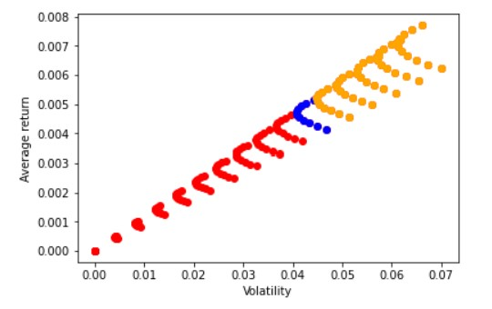

import pandas as pd
import numpy as np
import matplotlib.pyplot as plt
%matplotlib inline
url="https://www.dropbox.com/s/3k35mt3t57ygff2/GlobalFinMonthly.csv?dl=1"
Data = pd.read_csv(url,na_values=-99)
Data['Date']=pd.to_datetime(Data['Date'])
Data=Data.set_index(['Date'])
10. The Mean-Variance Frontier¶
Below I reproduce the plot of constructed last chapter
It shows the average EXCESS return and standard deviation for portfolios that vary the weight in the risk-free asset and also the weight between the US stock market and the international stock market

Note the upper envelope that defines the “investment frontier”, i.e., what is achiavable in terms of risk and returns
If you are in this envelope, you know that in order to get less risk you will have to get less return
There is no portfolio with a higher average return and the same volatility
And no portfolio with the same expected return and lower volatility
In volatility-expected return space all these “investment frontier” portfolio are in a straight line
Meaning that they achieve exactly the same ratio or expected excess return per unit of volatility since a stragith line has constant slope
So all these portfolios have exactly the same Sharpe ratio (\(\frac{E[r_p-R_f]}{std(r_p-R_f)}\))
This is also the maximum SR among all possible portfolios of the basis assets
(in this case only two: US and world portfolio)
What do these “efficient” portfolios look like? Do they have the same weights? How do the weights in the assets vary?
Mathematical derivaiton of the Mean-variance Frontier
These portfolios all can be thought as minimizing variance/volatility for a given desired expected return
or maximizing expected returns for a given dislike of variance
Formally they are choosing their composition of their portfolio
Which is a portfolio that invests in risky assets (vector of returns R) and the rest \((1-\sum_i^I X_i)\) at the risk-free rate.
note that I use big R here to emphasize that this is a vector of asset returns, like (\([R^{AAPL},R^{TSLA},..]\)), and little \(r_f\) to emphasize this is just a scalar (like 1%)
Note that \((1-\sum_i^I X_i)<0\). what is the interpretation of this number being negative? What is the interpreation of being positive?
So given weights W, asset returns R and rf, the portfolio returns \(r_p(X)\)
Excess return representation
It is much easier to do the math and see what is going on if we separate the excess returns and the return piece so we represent our portolio as
where \(R^e\) is the vector of excess returns
It is KEY to note that all the risky assets are now zero cost portfolios
so each risky asset is really a portfolio that is long the risky asset and short the risk-free rate
this means that no matter the sum of the weights in X, the cost of this risky portfolio is zero
so the way this works is that you get your dollar and invest in the risk-free rate and now decide “two things”
What your risky portfolio shoudl look like by choosing \(X/\sum X\)
How much of this dollar to allocate to the risk asset , by choosing \(\sum X\) the total fraction invested in the risky assets
If \(\sum X>1\) then you are leveraging, i.e. borrowing money to invest more than you have in the risky assets, so you are shorting the risk-free asset
It \(\sum X<1\) then you are leaving some money invested in the risk-free rate, so you are buying the risk free asset
Solution
All you need is to take the derivative of the expression with respect to the risky portfolio weights \(X\) :
and impose the “first order condition”: $\( \begin{aligned} E[R^e]- \gamma Var(R^e)X^*=0 \end{aligned} \)$
which simply means that if \(X^*\) is really the weight that maximizes the expression, if you move it a little bit in any direction, the value of the expression shouldn’t move much
In fact, for a tiny move in either direction, the benefit should be zero either way
Here is the intuition:
Lets consider that we want to find the x that maximizes: \(4x-x^2\)
x=np.arange(0,4,0.1)
plt.scatter(x,4*x-x**2)
<matplotlib.collections.PathCollection at 0x21ce22aa490>
This is maximized at 2
The FOC for this case is simply
Which means \(x^*=2\)
You see in the plot that pertubating x a little bit has not effect on the value
close to the optimal, the expression is flat.
This is a general result
The Tangecy portfolio
Rewriting our first order condition we have
\( \begin{align} \gamma Var(R^e)X^* &=E[R^e]\\ (\gamma Var(R^e))^{-1}\gamma Var(R^e)W^* &=(\gamma Var(R^e))^{-1}E[R^e]\\ W^* &=(\gamma Var(R^e))^{-1}E[R^e]\\ W^* &=\frac{1}{\gamma} Var(R^e)^{-1}E[R^e] \end{align}\)
We simply m,ultiplied both the RHS and the LHS by the inverse of the matrix \(\gamma Var(R^e)\) that was multiplying thw weight
This is equvalent to solving 5x=4, by dividing though by 5 to get x=4/5
Questions
How does your distaste for risk \(\gamma\) impact your portfolio composition?
Does it impact the relative weights in the risky assets?
Note that \(X^*\) is the optimal position in risky assets and therefore has the same dimension as the number of assets you are considering.
In our simple case 2 assets
Aside: Three different problems with exactly the same solution
We solved this problem
This problem has the same solution as minimizing the variance subject to hitting a desired expected return target
or maximising the expected return subject to hitting a desired volatility target
This means that pmce we have the tangency portfolio solution we can simply scale up and down the portfolio weights to achieve the desired volatility or expected return
Aside: Matrix inversion
You only need to understand how to operationaize it and in an conceptual level what it does
But you don’t need to really get the tiny details here.
If you are itnerested. Please see this below.
If you need even more please see section 5.3
Note that \((2)^{-1}=1/2=0.5\) (naturally!), \((Var(R^e))^{-1}\) is kind of like this,
but more complicated because \(Var(R^e)\) is a N by N matrix and we can’t simply divide over
The definition of the inverse function is \(f(x)=x^{-1}=y\) where \(y*x=1\)
for matrixis it is the same: \((Var(R^e))^{-1}Var(R^e)=I\), but now instead of 1, we have an indentity matrix, which is a matrix with 1’s in the diagonal and zero everywhere else
For example, lets say we want to inverse a 2 by 2 matrix:
We would simply solve
Which means solving this system of four equations below $\( \begin{aligned} 3*a+7*c=1\\ 3*b+7*d=0\\ 0*a+9*c=0\\ 0*b+9*d=1\\ \end{aligned}\)$
which in this case has an easy solution [a,b,c,d]=[1/3,-7/27,0,1/9]
But we should be thankful for being born after the 70’s, when people had to do these inversions by hand–for very large matrixes
Now we can simply us the linear algebra library build in numpy we discussed in Notebook 1 and invert the matrix
a=np.array([[3,7],[0,9]])
print(a)
np.linalg.inv(a)
[[3 7]
[0 9]]
array([[ 0.33333333, -0.25925926],
[ 0. , 0.11111111]])
np.linalg.inv(a) @ a
array([[1.00000000e+00, 3.33066907e-16],
[0.00000000e+00, 1.00000000e+00]])
a.T
array([[3, 0],
[7, 9]])
Finding the Tangency portfolio
First lets construct our vector of excess returns for our risky two assets US equity market and International equity market
Re=(Data[['RF','MKT','WorldxUSA']]).subtract(Data['RF'],axis='index').drop('RF',axis=1)
Re.head()
| MKT | WorldxUSA | |
|---|---|---|
| Date | ||
| 1963-02-28 | -0.0238 | -0.005073 |
| 1963-03-31 | 0.0308 | -0.001929 |
| 1963-04-30 | 0.0451 | -0.005836 |
| 1963-05-31 | 0.0176 | -0.002586 |
| 1963-06-30 | -0.0200 | -0.013460 |
We start by estimating the covariance matrix from our data \(Var(R^e)\)
Re.cov()
| MKT | WorldxUSA | |
|---|---|---|
| MKT | 0.001948 | 0.001264 |
| WorldxUSA | 0.001264 | 0.002182 |
We then estiamte the expected excess return, the premium you expect to earn by investing in each asset \(E[R^e]\)
Re.mean()
MKT 0.005140
WorldxUSA 0.004149
dtype: float64
We then invert the covaraicne matrix \(Var(R^e)^{-1}\)
np.linalg.inv(Re.cov())
array([[ 822.50792137, -476.49212708],
[-476.49212708, 734.40580739]])
we then use the dot product to cross-mulitply our vector of expected excess returns by the inverse of the covariance matrix
W=np.linalg.inv(Re.cov()) @ Re.mean()
W
array([2.25099751, 0.597729 ])
Now for a given level of risk-aversion \(gamma\) we can find the optimal risky portfolio
gamma=4
Wstar=W/gamma
Wstar
array([0.56274938, 0.14943225])
and the amount allocated to the risk-free asset
1-np.sum(Wstar)
0.2878183714834085
But what is your risk-aversion?
That is a hard question to answer!
A more productive way to think about this choice is in terms of the level of volatiltiy that you are confortable with.
You can bascially choose a gamma that implmenets your desired volatility
We first pull the \(1/\gamma\) out. Recall that \(Var(nx)=n^2Var(x)\)
We now simply pull the vector \(E[R^e]'Var(R^e)^{-1}\) out which because it is a vector the math is a bit different.In this case if the random variable X is a vector being multiplied by another vector W, then \(Var(WX)=WVar(X)W^T\). Apply thin here we get
Using that \(Var(R^e)^{-1}Var(R^e)=I\), i.e. the indentiy matrix, we get
\(Var((W^*)'R^e)=\frac{1}{\gamma^2}E[R^e]'Var(R^e)^{-1}E[R^e]\)
We can now solve for the desired level, say you want you portfolio to be mean-variance efficient and have volatility (meaning standard deviaiton) equal to a target \(\sigma^{D}\), D for desired.
\(\sigma^D=\sqrt{Var((W^*)'R^e)}=\frac{1}{\gamma}\sqrt{E[R^e]'Var(R^e)^{-1}E[R^e]}\)
where above we took the square root to go from variance to standard deviation. We can now solve for \(\gamma\)
Thus the optimal weights are
the intuition here is simple. \(\sqrt{E[R^e]'Var(R^e)^{-1}E[R^e]}\) is the volatility of the optimal portfolio with risk-aversion 1 ,\(E[R^e]'Var(R^e)^{-1}\). You simply scale up the weights up and down to hit your desired volatility level
The important point is that \(\frac{\sigma^D}{\sqrt{E[R^e]'Var(R^e)^{-1}E[R^e]}}\) is a scalar, so you are increasing/decreasing expsorue in the risky asset proportionally.
Your position in the risk-free asset can be simply solved for
So the more volatility you want, the less you invest in the risk-free asset and the more you invest in the risky assets.
Two-fund separation
This above is a classic result in finance.
It tells us that the decision of which assets to invest is completely independent of your risk-aversion
Your risky portfolio is always the same, and you risk-aversion simply determines how much of it you will have, versus the risk-free rate
Please take a moment to appreciate this because understading this result
Why that happens?
Because any portfolio that is proportional to \(Var(R^e)^{-1}E[R^e]\) achieve the highest feasible Sharpe Ratio
Why is that?
Recall what a SR is : \(E[r-r_f]/\sigma(r-r_f)\). Since this portfolio solves the problem of maximizing expected return for a given level of volatility, it also is the portfolio with maximum Sharpe Ratio
Note further that any linear compibration fo this portfolio with the risk-free rate will achieve exactly the same sharpe ratio.
Let \(r_p=r_f+wr^*\) then \(E[r_p-r_f]/\sigma(r_p-r_f)=E[wr^*]/\sigma(wr^*)=E[r^*]/\sigma(r^*)\)
Which happens becasue the risk-free rate has zero volatiltiy.
Properties of the Tangency Portfolio
Any portfolio that is proportional to \(Var(R^e)^{-1}E[R^e]\) is in the Tangency of the mean-variance frontier
I will refer to \(W_T=Var(R^e)^{-1}E[R^e]\) as the tangency portfolio, but formally anyy other portfolio that is of the form \(x W_T\) where x is a scalar is also tangency.
What is the expected excess return of the tangency portfolio?
What is the volatility of the tangency portfolio?
What is the Sharpe Ratio of the Tangency portfolio?
As we saw before, the Sharpe Ratio is invariant to the precise location that you choose in the investment frontier. Of course volatiity and Expected excess return will vary, but any leverage effect will exactyl cancel out when you look at the Sharpe Ratio
So Sharpe Ratio is nice becasuse it is invariant to leverage
Portfolio advice summary (so far!)
All investors invest in the same portfolio of risky assets, regardless of risk aversion.
Depending on risk aversion (desired level of volatility) , they choose an appropriate mix of risk-free and risky fund investments
Reality is a bit more complicated
Here we assume your preferences: You like higher portfolio expected returns and dislikes portfolio variance
Peoples preferences for risk are likely to be much richer than these simple preferences
We will discuss later how to incorporate other risk dimensions (tail risks, background risks, etc)
We also ignore investment horizon effects which we will discuss later in the course